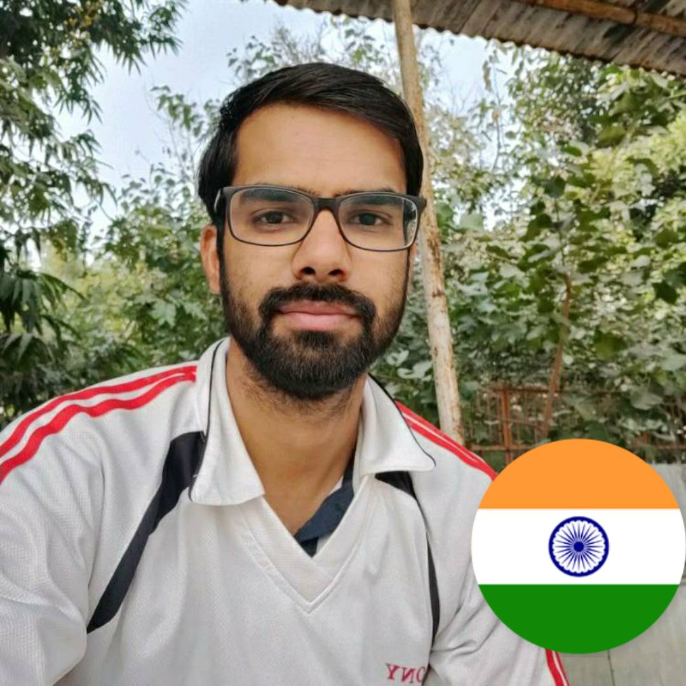

Amrit Maan

Professional Overview
A dedicated and versatile cricketer with 5 years of competitive experience in Delhi’s cricketing landscape. Demonstrated expertise in various facets of the game while representing Sonnet Club for 4 years and Modern School Cricket Ground for 1 year. Known for a consistent performance record and a keen strategic mindset that has significantly contributed to team successes and individual accolades.
Experience
Sonnet Club (4 Years)
Role: Opening Batsman
Key Contributions:
- Played a pivotal role in leading the team to win state tournament.
- Consistently performed in high-pressure matches, contributing crucial runs and key wickets.
- Recognized for [specific achievements or awards, e.g., top run-scorer, best bowler of the season].
- Demonstrated leadership and mentoring abilities, guiding younger players and enhancing team dynamics.
Modern School Cricket Ground (1 Year)
Role: Opening Batsman
Key Contributions:
- Made an immediate impact by being the highest run scorer during that season.
- Adapted quickly to the new environment, contributing to team standing 2nd on the table.
- Played a crucial role in quater final, showcasing versatility and skill in different roles.
Skills & Strengths
- Batting: Right handed opening batsman with an average of 47.65 and stirke rate 140.61.
- Bowling: Right arm off break bowler having 22 wickets at an economy of 8.28.
- Fielding: Excellent fielding skills with a knack for fielding at the covers with 25 catches.
- Leadership: Experienced vice-captain with a focus on team cohesion and strategic planning.
- Achievements:
- Best Batting Figures: 132(60) not out.
- Best Bowling Figures: 4/25.
- Man of the Match: 6
- Best Batter: 14
Education
- Degree: Bachelor of Arts (BA)
- Institution: CCS University
- Additional Learning: Currently learning web development to enhance technical skills and explore new career opportunities.
Contact Information
Contact Me